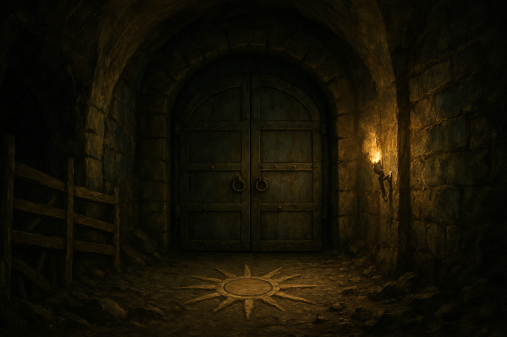

Chapter 4: The Father of Shadows
The Blooming of Macksohn

The Blooming of Macksohn
15048.11.12
一夜過後，Ron 和 Samael 兩人一早便睡醒，在 White Brick 的一樓相遇。兩人去了一趟雜貨店，買了酷爆的飼料以及麵包。
兩人決定利用早上的時間，到王宮花園逛逛。探頭探腦的兩人擔心被衛兵發現，卻適得其反，不過走到 Ron 身邊的衛兵拿下頭盔—是 Glen。Ron 藉機向 Glen 打聽了餐廳老闆 Joseph 失蹤事件的後續，卻沒得到多少有用的消息。他也分享了自己打聽到 Joseph 似乎已經不在麥克嵩的事。在 Glen 離開前，Ron 和 Samael 剛好提到了 Sha’Doom 的名字。Glen 頓了一下，表示他對這名字有印象。近期麥克嵩衛兵隊有針對隊伍內的可能滲透狀況進行清查，其中 Sha’Doom 就列在名單之內。Glen 在三向 Ron 保障自己和 Scar-Face 是可信的，不用擔心。
在 Samael 和 Ron 回到 White Brick 後，大夥在一樓大廳集合，準備前往 Patton’s 去找 Mr. Moon，一起前去探望 Brock。
來到了 Brock 家，Mr. Moon 推開了門。眾人一起在客廳的座椅上坐下，和 Brock 的父母面對面。Midori 問起了 Brock 的狀況，從 Brock 母親那兒得到的卻是「你說的 Brock，是……？」。出於驚詫，眾人決定到「Brock」的房間去看看。
在房間內的床上，是一隻巨大且皮膚黝黑，長滿毛皮的生物。Brock 早已不再能用人型來形容。Mr. Moon 輕輕地撫摸了 Brock 的毛皮，只聽到他發出了微微的低鳴聲。眾人試著去了解 Brock 身上發生了什麼事，卻無法理解，但那隻生物，讓他們想起前一天在圖書館中看見的拉茲特獸。
大家和 Mr. Moon 一起在房子外簡單交談。Mr. Moon 前一天來看 Brock 時，他的身上便已開始變黑且開始長毛，他的父母也開始對事實的認知有些錯誤了。這時，早上沒出現的 Anedak 也回到了大家身邊。回到 Brock 的家中，十分低落，不忍再看一眼 Brock 的 Mr. Moon 決定待在客廳和 Brock 的父母談話，其他人則回到他的房間繼續調查。
Midori 發現 Brock 床底下地板似乎下陷了，他的床板則有些裂痕。Anedak 滑到了床底下調查，發現床板似乎沒有想像中的受損，底下地板的下陷更為嚴重。而比起地底有股什麼力量在吸著 Brock，更像是 Brock 身體內的某股力量讓他不斷下沉。
大家一時想不出該怎麼辦，也只好先離開 Brock 家。Mr. Moon 先回事務所去，而其他人則帶領 Anedak 去王宮花園前的廣場攤位報名比武大會。在 Anedak 擅自作主下，他也幫其他夥伴都報名了比武大會，而大家的稱號分別是：神王之刃 Anedak、方努爾市的測謊機 Midori、膝蓋粉碎者 Paladin、絕望終局 Samael、美人與瘸虎 YHWH，以及主教殺手 Ron，雖然 Ron 早已以尖頂寺的 Ron 報名了。
這時，Ron 的身後傳出了一陣爽朗的笑聲。一回頭，Ron 看見了 Sean，他在尖頂寺過去擅長打鬥的師兄之一。Sean 稱讚 Ron 比起過去更為成熟，也許已經達到過去師父對他的期待了。隨後，Sean 則用了「尖頂寺的 Sean」為名，報名了比武大會。
離開報名會場後，大家先到城門口買了沙威瑪當點心，接著聽從比武大會報名攤位人員的推薦，來到 Edmond’s Diner 用餐。在用餐過程中，店長 Lewis 前來打招呼，和 Ron 表示未來歡迎他回來這裡工作。不久後，一名穿著廚師裝的男子走了出來，詢問 Ron 用餐是否滿意。接著他自我介紹自己是 Edmond，這家店的大廚。他邀請 Ron 等等煎個牛排給他吃看看。看見 Ron 的眾多夥伴，他便轉念，讓 Ron 給每位夥伴各煎一份牛排做為請客。等待的過程中，Edmond 自己拉了張椅子，在 Ron 身邊坐了下來等待。
Ron 用完餐後，Edmond 便起身，帶領他來到廚房，準備料理。用餐區，Samael 拿起他的魯特琴，彈奏了起來，告訴餐廳內的各位，等等會有個廚藝大賽，請大家期待，不過其他客人們似乎沒有很領情。在 Edmond 協助備料下，Ron 順利的煎好了幾份牛排，兩人一起將牛排端到用餐區。除了台北市議員外，因為有準備額外的牛排，附近一些客人也都享用到了 Ron 的牛排。Edmond 坐了下來，切了一小塊牛排，放入嘴裡。他點了點頭，十分肯定 Ron 的廚藝。Edmond 邀請 Ron 留下來，在他的餐廳工作，而 Ron 僅表示他現在得專心準備幾天後的比武大會，會後要不要留下來再說。
離開了 Edmond’s Diner，Paladin 提議想去採購武器，但到處都問不到城內哪裡有打鐵鋪。突然，Paladin 和 YHWH 想到，Brock 曾說過他家過去曾經營過打鐵鋪，但因為經營不善而不再營業了。大家決定再去一趟 Brock 的家。
在和 Brock 的父母打了招呼後，Paladin 和 Samael 和 Brock 的父親詢問了關於城內打鐵鋪的消息，他表示自己家裡還有些庫存，可以給他們試試。雖然武器因為保存不佳，有些生鏽，不過還算堪用。Paladin 和 Samael 分別採買了一兩把武器。
同時，大家到 Brock 的房間探望他，發現他的身體又下沉了許多。Anedak、Ron 和 Samael 三人試圖將他先搬到旁邊，並想想接著該怎麼做。眾人決定先去能問情報的小黑屋打探消息。
來到小黑屋外，過去曾冒犯到小黑屋主人的 Midori 和 YHWH 待在屋外，讓其他人去問事。付出了相應的代價（金幣、以及 Anedak 的武器），大家得到了一些消息：能用拉茲特獸毛皮製作隱形斗篷的人，在麥克嵩目前僅有暗影之父一人；暗影之父並非大家所認知的那個人；Jiaheng 被關在王宮的室內，且最近快要出來了；Franz 住在 Brandon’s Corner 的 107 號房。
大家討論後，決定 Samael、Paladin 和 Anedak 去 Brandon’s Corner 拜訪 Franz，詢問更多關於暗影之父的消息；Midori、YHWH 和 Ron 則回到 Brock 家，思考該怎麼處理 Brock。
來到 Brandon’s Corner，Samael、Paladin 和 Anedak 順利的到了 Franz 的房間。在說明來意後，Franz 警戒的確認門窗是否緊鎖，且拉上窗簾。他翻開他密密麻麻的筆記本，說明當時自己的冒險夥伴都是被暗影之父害死的。另外，大家所見到的斗篷人，其實是拉索斯教的傳訊者（messenger），而且會出現在各個不同城市，至於他的真身，沒有人清楚。Franz 似乎還有很多知道的事，但是卻沒有完全透露給冒險者們。
另一方面，Midori、YHWH 和 Ron 回到了 Brock 家。在 Brock 的房間，他們意外的發現 Brock 已經消失了，而地板也被挖了一個大洞，深度大約是一個人的身高。跳入洞內，左右兩側是看起來早已被打通的通道。三人戰戰兢兢地向內探索，直到發現遠方出現了三對發亮的眼睛。那三對眼睛的主人，便是三頭拉茲特獸。Midori 拿出麵包，想釋出善意，也許有機會能辨認出哪一隻是 Brock。他丟了一塊麵包在拉茲特獸前方，最右方的那隻緩緩走了出來，叼起麵包，看了看他們。回到洞口 YHWH 順利地爬上地面。Ron 似乎遇上了困難，不但爬不上來，還意外破壞了洞口，讓爬上地面更加困難。在 YHWH 的求助下，Brock 的父親提供了木梯和繩子。雖然 Ron 又破壞了木梯，但是靠著繩子，Ron 和 Midori 都順利回到了地面。
暫時離開了 Brock 家，三人決定先回 White Brick，準備好冒險工具，和其他三位夥伴一起再次出發，回到 Brock 家，朝地底探索。
回到了 Brock 家，台北市議員從 Brock 床下的地洞進入，由 Anedak 帶頭，一路往前走。中途，大家停在了一處上方有開口的地方。Anedak 爬了上去，發現似乎是在麥克嵩較為貧窮地區的一處古井，但是由於不曾來到城市的這一端，Anedak 也無法判斷這個開口位於何處。
繼續前行，Anedak 聽見遠方似乎有著吟唱聲，但是判別不出實際的來源。不久後，他看見前方有一座巨大的金屬門，似乎就是吟唱聲的來源。衝動之下，他將雙開門用力打開，看見門內有不少身穿黑色斗篷，帶著面具的人（Anedak 判斷為拉索斯的教眾）繞著圈，正在吟唱著。發現事情不太對勁，Anedak 趕緊將門關上。台北市議員討論著該怎麼辦，於是決定讓 Anedak 再次開門，但是只開門縫。然而，在門縫被打開時，他們看見門縫內是一整排的面具臉，將門堵得密密麻麻的。然而，這些教眾卻又沒有任何攻擊性，指隨著外面 Anedak 的動作移動眼神。Anedak 索性把整扇門都打開，發現整面空間都擠滿了戴著面具的臉，少說至少有二、三十張臉。冒險者們不知道該怎麼辦，只好再將門關上，朝著門右側的方向快步離開。
走著走著，Anedak 發現正前方的道路逐漸從砂石地變成潔白的大理石，而且開始出現有雕刻的石柱。石柱上，有著不少有十道光芒太陽的符號，讓眾人感到十分起疑。在路的底端是一座樓梯，Midori 想貼在門上聽聽門外的聲音，卻被 Anedak 用力撞開門。
門外傳來歡欣的音樂聲，但裡面的空間有些陰暗。隨著 Anedak 帶頭走了出去，眾人發現自己身處於劇院中，而這劇院正是崔尼斯劇院。舞台上演出的似乎是個雜技團，演員包含著各種不同生物。除了 Ron 外，眾人盡可能低調地找了離門口較近的座位坐了下來，思考是否該逃離劇院。而 Ron 則警戒地站在沒有關上的門邊。然而，Midori 沒有熄滅的火把引起了其他觀賞者的不滿，請了劇院的工作人員前來勸導。
Ron 看見劇院後方有個中老年瘦弱的身影走了進來，逐步朝著他的方向前進，是他前一天在劇院售票亭認識的售票員，Nathaniel。Nathaniel 走向了 Midori，請他把火把熄滅，接著走到了通往地下的門口，將門鎖上，口中碎念著「這門怎麼會沒有鎖上？」。Ron 低下頭，似乎不想被前一天對他印象還不錯的 Nathaniel 認出來。Anedak 和 Midori 來到了門前，向 Nathaniel 詢問關於這扇門的事，Nathaniel 僅表示這是上面的人叫他一定要鎖上的，但是他並不了解這扇門會通往哪裡。
秀尚未演完，冒險者們先行從劇院走了出來，來到售票亭，並向 Nathaniel 要了張這場秀的節目單。秀的名字叫「Simon’s 雜技團」，團長是 Simon Fonzo，且雜技團宣稱演出者是來自各地的不同生物，絕對精彩。
離開劇院後，冒險者們猶豫著要去哪裡吃晚餐，最後他們決定去 Sunrise，順便看看 Frankie 將餐館經營得如何。
Sunrise 的生意十分慘淡，除了冒險者們外，總共只有三個客人。Frankie 喝斥著要他們不能併桌，而且餐點和他們索取高價，食物又像廚餘一般難吃。在情緒極度不滿之下，Anedak 繞進了廚房，拿著他的大砍刀，朝向 Frankie 的右肩揮下。Frankie 發出了慘烈的叫聲，剩下的其他客人見到狀況不太好，趕緊逃離了 Sunrise。
大家把 Frankie 趕緊裝入了 bag of holding 中，並把 Sunrise 的門鎖上，用餐區的燈也關了。Ron 來到了熟悉的廚房，尋找可用的食材下廚：除了麵包外，只剩下三塊牛排保存的還能食用，其他食物都狀況奇慘無比。不過 Ron 也找到了一大塊起司，雖然辨別不出種類，但是看起來十分美味，於是便收在了自己的背包內。
在廚房後的休息室，眾人用盡了各種方法恐嚇從 bag of holding 裡抬出的 Frankie，終於從他身上以及櫃檯拿走了不少金幣。Ron 試著從 Frankie 口中問出 Jonathan 老闆的下落，但 Frankie 絕口不提，僅在最後大家將他裝回 bag of holding 前，吐出了一個地名：Sebano（瑟巴諾），距離麥克嵩不遠的一座城鎮。
冒險者們回到陰暗的用餐區享受 Ron 準備的餐點。Ron 隱約看見 Sunrise 外，有個紅髮的男子瞧著裡面。趕緊吃完後，大家將血跡清理乾淨，燈光熄滅後，便從 Sunrise 後門悄悄離開。
大家繞回了 Brock 家，想利用晚上時間將通往地下的入口封起來，但應門的 Brock 母親表示他的老公已經休息了，希望大家隔日再來，比較不會打擾。
回到 White Brick，冒險者在櫃檯討論著怎麼分房睡，櫃檯的人員建議他們可以住通鋪，於是大家便決定試試看著通鋪。White Brick 的通鋪裡面可以睡得下八個人，空間十分足夠。
入夜後，Anedak 在夢中聽見了神王 King Knicol 的聲音。靠著大法師烏西奧尼的翻譯，Anedak 了解 King Knicol 說著要他繼續跟隨沃瓦倫的惡魔，也肯定目前他做得很正確。
15048.11.13
日出後不久，大家都醒來了。眾人簡單收拾後，到了一樓大廳，櫃檯內的人正是荒野旋律的小粉絲 Kess。Midori 向 Kess 詢問了附近的麵包店以及雜貨店，便起身前往。大家在麵包店內簡單買了一些各種口味的麵包作為乾糧。到了雜貨店，大家則補了繩子、打火盒、被褥等各式用品，以及梯子。
再次回到 Brock 家，大家進入了 Brock 的房間，搭上梯子，逐一爬到了地下。在複雜的地下城，冒險團邊走邊畫地圖。過程中，Midori 和 Anedak 一度掉入了陷阱中，但也安全逃離。Anedak 和 Paladin 也在先前發現的古井處爬出，稍微遊歷了附近的街道，並向其中一位行乞的少女，詢問到此處是麥克嵩舊城區的金石街，過去是繁榮的商業區，如今卻都是貧民區，以及無家可歸的流浪漢。
在一處看似粗糙挖出的洞穴，Anedak 帶著大家向前爬行，卻逐漸感受到濕氣，而最終決定掉頭離開。
在地下城中，冒險者們也找到了一處由木頭柵欄圍起的空間，裡頭有七隻拉茲特獸。看著受苦的拉茲特獸，Midori 想藉由殺死他們來讓他們擺脫痛苦，YHWH 和 Ron 也同意；Samael 則於心不忍，而 Anedak 則不想動手殺死他們，只想吃拉茲特獸的肉（？）。最終，在冒險者們沒有想到周全殺死拉茲特獸的方法下，決定將他們留在這裡，不多做決定，便離開了。
在離開地下城前，冒險者們決定回到前一天看見拉索斯教眾集會的空間進行搜索。Midori、Ron、YHWH 和 Anedak 進入了房間內，而 Paladin 和 Samael 則在門外警戒。YHWH 透過火光，發現了房間內有大量的方形櫃子，上面編有號碼 1 到 60 號，但是上鎖了，於是他決定用火將木製的櫃子燒開。同時，Midori 發現地上有畫著各式圖騰與符號，經過嗅聞後沒有聞到奇異的味道，於是便嘗試用舌頭舔舐，卻因此昏迷了。
我只是想嚐嚐看有沒有說謊的味道。
Midori，在地下城昏迷後
在木櫃被火勢燒開後，YHWH 發現櫃子內收的是前一天大家看見拉索斯教眾所穿的黑袍與白色面具，於是 YHWH 便搜刮了不少，裝在 bag of holding 內。然而，火勢逐漸展開，且蔓延的速度極快。在眾人發現並趕緊逃出後，才發現 Midori 倒在裡面。穿著鎖子甲的 Midori 不容易搬動，Anedak 和 Ron 輪番搬了好多次才終於將 Midori 搬了出來，且 Ron 還受了傷。
好不容易將 Midori 搬出，且將厚重的金屬門關上後，Ron 在門前坐著休息，卻感受到金屬門逐漸發燙，於是趕緊跳開。跑向來側躲避的 Samael 和 Ron 在火勢從門內炸開時被火焰燙傷，十分嚴重，但還來得及繼續逃跑；扛著 Midori 的 Anedak 與 YHWH 和 Paladin 等人向崔尼斯劇院的方向逃竄。兩方人馬就此分散。
跑回 Brock 房間的底下，Ron 和 Samael 順利的爬回地面，坐在地上喘息。簡單喘口氣後，兩人趕緊回到 White Brick 休息。
另一方面，Anedak 等人將 Midori 搬到通往崔尼斯劇院的暗門，卻因為搬了太久，肌肉開始疲乏，而難以在搬開暗門後將 Midori 搬出。隨著火勢逐漸往劇院焚燒，Anedak 向著劇院內大喊「失火了」，卻只見劇院內的觀眾向外逃竄，只有兩名工作人員（包含大家前一日所見到的 Nathaniel）趕來了解狀況。進入劇院的 Paladin 藉著紫羅蘭給他的別針，要求兩名工作人員前來協助將 Midori 搬到劇院內。然而，因為火勢的關係，Anedak 與兩名工作人員依然無法將 Midori 搬出來。面臨即將燒來的火與尚未清醒的 Midori，Anedak 將掛在胸前神王 King Knicol 的手指項鍊拋向劇院內，讓 YHWH 收著，Paladin 則趕緊前來一起搬 Midori。最終，在火燒入劇院的那一刻，四人終於將 Midori 搬到劇院內，但 Anedak 和兩名工作人員卻已被大火燒傷，陷入昏迷狀態。靠著最後的意志力，YHWH 和 Paladin 將 Anedak 與 Midori 一路拖到劇院入口，而工作人員只能倒在原地，直到他們的生命被持續竄出的火勢燒盡。
崔尼斯劇院門口，YHWH 決定跑去找人救援，而 Paladin 則在原地照顧昏迷的 Midori 和 Anedak。經過簡單的檢查後，Paladin 判斷 Midori 生命跡象相對穩定，只是不知道為何昏迷了；Anedak 則是身受重傷，在生與死的邊緣徘徊。靠著不甚熟悉的治療法術，Paladin 順利的將 Anedak 從死亡關頭救回，雖然狀態不佳，但至少恢復意識了。兩人吃著手邊的乾糧，等待 YHWH 搬來的救援。
YHWH 首先到了 Gate’s Inn，請求 Kevin 來拯救他心愛的 Midori，但 Kevin 貌似瀟灑地告訴他，自己已經放下 Midori，不在意他了。心灰意冷的 YHWH 只好轉向 Mr. Moon，前往 Patton’s 去找他。在簡單說明後，Mr. Moon 帶著 YHWH，一起去找人（以及擔架）協助。
在 Mr. Moon 找來的人力幫助下，YHWH 等人回到了劇院門口，將逐漸穩定的 Anedak 與仍然昏迷中的 Midori 用擔架搬到 Mr. Moon 的辦公室去。在前來幫忙的人離開前，YHWH 請他們協助到 White Brick 通知 Samael 和 Ron，但是因為不知道房間號碼，無法保證是否能成功傳話。
在 Mr. Moon 和冒險者們道別後，YHWH、Paladin、Anedak 和 Midori 便在 Patton’s 內過夜休息，卻遲遲沒有等到 Samael 和 Ron 的出現。